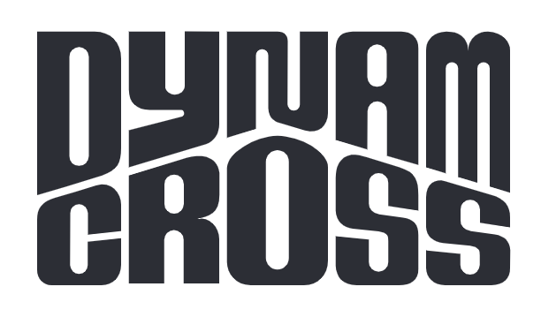

Music bands
When I was a teenager, I played in several cover bands (rock throughout middle school, then went towards funk and jazz music going into high school).
It was around the end of high school that I found a group of people who were serious about writing original songs as a band - the genre being a mix of funk, reggae, and jazz.
Tukana (2016—2019)
Here is the list of band members of Tukana:
- Bassist: myself
- Drums: Diego Fernandez Cerda
- Guitarist: Maximilien Girault
- Keyboards: Étienne Chassagnol
- Saxophone, Flute: Tom Salguero
We had written 6 tracks, and got 4 of those recorded - unfortunately, the mixes were never finalized, so they are a little rough on the edges.
Since I am somewhat confident/afraid that these songs will stay forever unknown and unreleased, I am taking the liberty of sharing these 4 tracks here.
This band will probably remain ultra-underground, but at least this page will allow it to not become “lost media”.
Many thanks to those precious few who saw us play live, back in the day.

Dynam Cross (2013—2016)
The band we had was originally called Dynam Cross, and we did a couple of small gigs for 2-3 years.
Here is a list of the band members of Dynam Cross:
- Bassist: myself
- Drums: Guillaume Rossignol (and later, Alexandre Denis)
- Guitarist: Maximilien Girault
- Keyboards: Étienne Chassagnol
- Singer: Constance Matthiessen
- Rapper: Daniel Norbert
- Saxophone (baritone): Pierre Desbrosses
- Saxophone (tenor): Justin Larue
- Saxophone (alto), Clarinet: Théophile Fleury
Many thanks to those who saw us play live, back in the day.

Here are the unreleased songs (unfortunately, for many of them the vocal tracks were never recorded, these are marked as “instrumental”…). I personally feel equal parts both proud and dissapointed of these songs - my favorite is definitely “Brotherhood” as it shows the style we ended up evolving towards.
Afterwards some time passed, some people left, we found a drummer that was in the same mindset/taste as the rest of us, and so us remaining 4 core guys finally decided to orient our musical style towards more of a jazz fusion style.
To symbolize our change of personnel and direction, we changed the band name to become Tukana - this was back in 2016.